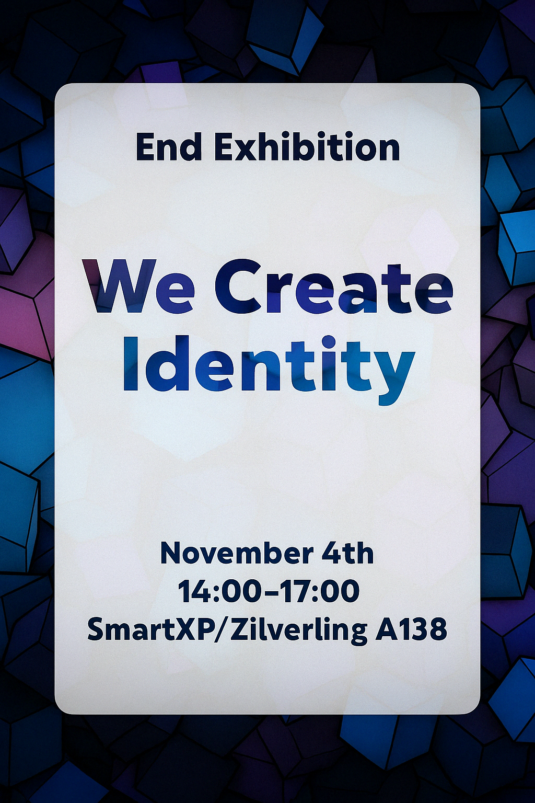

Exhibition – Poster Design
Tools: Affinity Designer
This promotional poster was designed for the final exhibition “We Create Identity”, held at the end of a semester-long group project. The exhibition focused on the concept of identity – both personal and collective.
Design Focus:
The poster uses bold typography and geometric color blocks to reflect the theme. A central white panel creates visual contrast and guides attention to the event details while reinforcing the message of clarity within complexity.
Outcome:
This project explored layout hierarchy, typographic balance, and visual storytelling in a print context.
